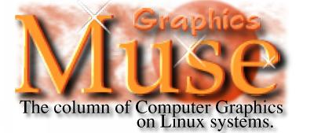
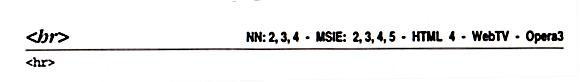
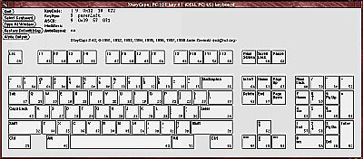

his
column is dedicated to the use, creation, distribution, and discussion
of computer graphics tools for Linux systems.
his
column is dedicated to the use, creation, distribution, and discussion
of computer graphics tools for Linux systems.
|  |
muse:
|
|
|
| You'll
notice a few minor changes to this months column. First, I've got
a sponsor: SoftPro Books is
providing books for me to do book reviews. In exchange, I'll be linking
the book covers to their site so you can order them. Their sponsorship
allows me to do more book reviews than normal since otherwise I'd have
to purchase the books. And that gets expensive. So if you think
the book being reviewed is for you, please consider purchasing it from
SoftPro Books.
Second, I've signed up for Associate/Affiliate programs with Amazon.com and fatbrain.com, respectively. If you're considering buying some other books online, I'd appreciate it if you visited their site via these links. If you buy books via these links I get a small stipend, which over the long term I can use to buy equipement. Right now I'm trying to get some cash together to get a TV card so I can do an article on software for those beasts. In this months column you'll find:
|
|

Gerd Knorr XawTV is a simple Xaw-based TV program which uses the bttv driver or video4linux. It contains various command-line utilities for grabbing images and avi movies, for tuning in TV stations, etc. A grabber driver for vic and a radio application (needs KDE) for the boards with radio support are included as well. Changes: 15 bpp problems fixed, NTSC-HRC support added, driver updates (sync up with bttv 0.6.1, msp3400 nicam changes). http://www.in-berlin.de/User/kraxel/xawtv.html
Random Quotes: Seen on the SANE web site (in the legend explaining the supported scanner list): "stable" means someone is pulling your leg. "When I read a book about computers, they're written by Martians, for Martians. They don't know how to spell out a word. Everything has to be three letters. This drives me batty. In fact, when I rule the world, there will be a glossary at the bottom of every page and every photograph in every computer publication that says exactly what these abbreviations are." Harold Feinstein, as quoted from the February 1999 issue of PEI Magazine. |
Tech Soft America (TSA), developer of the popular HOOPS 3D Graphics System today announced support for the Linux Operating System in their 4.41 release. This announcement further expands HOOPS' already extensive platform coverage and will enable high-end 3D applications to be built for Linux using HOOPS - a robust graphics development component with a proven track record in the CAD/CAM/CAE GIS and Geophysical application markets.
Complete
announcement.
Hoops3D
Web site.
FreeWRL is a free VRML browser for Linux. It aims to be fully VRML97 compliant, complete with scripting in Perl, Java and Javascript, and EAI. It is written mostly in Perl, with some C for library interfaces & rendering and uses OpenGL (Mesa) for graphics. The current versions are still alpha-stage and there are several pieces missing (especially certain field types in EAI etc) but it is quite usable in various types of worlds. Changes: Some bugs fixed. New maintainer - John Stewart - CRC Canada
http://debra.dgbt.crc.ca/~luigi/FreeWRL/
ttmkfdir is a tool to create
valid and complete fonts.dir files from TrueType fonts. It is very useful
when you plan to use a TrueType enabled font server that is based on the
X11R6 sample implementation (xfsft for instance). Great care has been taken
to correctly identify the encodings that a given TrueType font supports.
Changes: First freshmeat
announcement.
http://www.darmstadt.gmd.de/~pommnitz/ttmkfdir.tar.gz
The Xfsft patches to X11R6 enable X11 servers (including XFree86) to use TrueType fonts and improves on the way X11 handles international scalable fonts.
Changes: New in version 1.0.3
is support for international Type 1 and Speedo
fonts.
Download: ftp://metalab.unc.edu/pub/Linux/X11/fonts/xfsft-1.0.3.tar.gz
Red Hat Packages: http://www.darmstadt.gmd.de/~pommnitz/XF86-xfsft/index.html
Homepage: http://www.dcs.ed.ac.uk/home/jec/programs/xfsft/
Retardotracer is a raytracer written in C++ that raytraces both reverse and forwards for each polygon. This allows it to accurately model some (and only some) things. It works in parallel, which is kinda neat. Foo, Bar, and Baz are included.
Changes: This is the first
release.
http://www.ece.utexas.edu/~leibowit/retardotracer/
(only provides access to tarball)
Dave Gnukem is a GPL'ed 2D Scrolling platform game, similar to Duke Nukem 1. It includes a sprite and level editor. The game and editor use GGI, and thus runs on the console as well as in a window under X.
Changes: Added teleporters,
bananas, title screen image; Some cosmetic additions, bugfixes, structural
game-flow improvements, menu improvements, new sprite editor features,
full-screen mode in X.
http://www.geocities.com/SoHo/Lofts/2018/djgame.html
TexturePaint is a Gimp plugin
which displays a Quake I/II model in an openGL window and shows a texture
image mapped on the model. You can modify the texture image with GIMP and
view the result in the 3d window. You can also paint in the 3d view and
TexturePaint calculates the texture for you.
Changes: Autoconf , Support
for Quake I models
http://home.t-online.de/home/uwe_maurer/texpaint.htm
"GLX provides the glue connecting OpenGL® and the X Window SystemTM and is required by any OpenGL implementation using X."For the complete announcement, go to http://www.sgi.com/software/opensource/glx/.
John Leech is organizing a BOF (Birds-of-a-Feather) session on Linux and 3D graphics at Linux World Expo in March. The details:
Linux/3D BOFIf you have a topic to discuss, please contact me about it in advance (email to lwbof@oddhack.engr.sgi.com). Items already on the list:
Wednesday, March 3, 1999
San Jose Convention Center
Room A4 5:30-7 PM
...the Gimp was mentioned in an article discussing alternatives to Photoshop in the February 1999 issue of PEI (Photo Electronic Imaging) magazine?...holding the Control [CTRL] key down while rotating [Gimp images and layers] locks it to 15 degree increments.
Seth Burgess <sjburges@gimp.org>...the relatively new Wacom Intuos drawing tablets are reported to work with the Gimp now. Take a look at http://www.gtk.org/~otaylor/xinput/ for help on setting up X Input (required for using tablets under the X Window System) and http://levien.com/free/linux_intuos.html for information on the Intuos driver status. Seth Burgess says "Support for tablets is improved in Gimp 1.1.x with a new "Ink" tool that is just too much fun to play with. Of course 1.1.x is development, and crashes semi-regularly, so use at your own risk."
...there is a TrueType for XFree86 Mini-Howto at http://www.sfu.ca/~yzhang/linux/truetype/.
...there is an interesting article by Cecil Adams on the history of the ratios for TV and movie screens at http://www.straightdope.com/columns/981120.html.
A: Some plug-ins have Reset or Defaults buttons but many do not. There is no standard for how plug-ins should behave for resetting to default values.
Q: Can I have more than 1 layers dialog open simultaneously, rather than switching from image to image. This is annoying when I'm working on several multi-layer images together.
A: No, its not possible.
But when you press Ctrl-L in an image the layers dialog shows the layers
of this image. So you can switch faster to other images than to use the
mouse.
Jens Finke <pearl@darkride.net>
Q: Someone mentioned this recently, saying what map projection is required to get a map of Earth correctly image mapped on to a sphere in POV-Ray, and even mentioning a web site where such a map can be found.
A1: There is a collection of bitmapped planet surfaces at the IMP website:
http://www.imp.org/members/scene/test_a/scripta.htmlThere are also links to sources and methods of projection. The maps here are not necessarily 'correct', but I would be interested in knowing how to do the correction.
A2: The maps at that
site [listed in A1 above] are certainly much nicer than the others I have
found, and they also appear to be the correct projection for POV's map_type
1.
Robert Sorenson
zephyr@nerc.com
A3: For the most part
(+95% of maps) you should map them cyllindricly onto a sphere, and they
look great.
Simon de Vet
http://home.istar.ca/~sdevet
A4: http://maps.jpl.nasa.gov/
(yes, Nasa, the space agency)
Scott McDonald
scott@urbandragons.com
Q: I am an "end user" of my own Linux-based system, having recently graduated from that "other" OS. I miss having the font selection I have on the other side of my hard drive (my computer has a split personality). I have the new WordPerfect 8 for Linux and the fonts are boring! I would like at least one good blackletter, script, or classic type face (Goudy, Caslon,etc.) but I don't know where to look or even if they are available for Linux. Any ideas? Kinene Barzin <KBarzin@compuserve.com>
A: Linux, actually the X Window System, uses Adobe Type 1 fonts by default. You're probably used to True Type fonts. You can use both on your system, but there are a few tricks to getting things to work.
The easiest method is to find Type 1 versions of the fonts you already have. I have found that many of the font collections on CDs available from the local software stores come with both True Type and Type 1 fonts. I just copy the Type 1 fonts to a local directory and then tell the X server to include this new directory. Take a look at the xset command, in particular the "fp" option. You'll also want to take a look at the Type1Inst script, which will configure the new directory so WordPerfect, the Gimp and other tools can use the common Font name instead of the longer XLFD, X Logical Font Description (that long name with all the dashes in it).
Alternatively, you can use
the True Type fonts through the use of a Font Server. A Font server
is a separate program that talks to the X server and manages fonts for
the server. There are two fonts servers available that handle True
Type fonts: xfstt and xfsft
(similar names, but different programs). Look on freshmeat
for where these can be downloaded. Font servers should be able to handle
both True Type and Type 1 fonts, but I've not tried to do mix them.
Using xset it should also be possible to mix local Type 1 fonts with those
managed using a font server.
I see a lot of posts regarding problems with font installation, I had a tip for those who have bought applix : it comes with a wonderful fontmanager (applix/axdatas/fontmetrics/gallium/fontfm) just start it as root and you can manage your fonts in a very easy way, create subdirectories and activate them only on need, test fonts before installing etc...'Muse: I tried this with my installation of Applix and sure enough, its a fine font previewer. Certainly better than most of the other tools I have for previewing fonts. I didn't try it for managing font directories but it does appear to permit this.
whitenoise@fishnet.com wrote:
A Linux freak of mine sent me your URL. Cool graphics (esp. like Angel). I do some designing/putzing as well - mostly Photoshop - and I was curious where you get the initial images of the women? The graphics I do are ok but I always seem to get stuck finding GOOD images of women that I can reproduce without spending money or getting sued for infringement. By GOOD pictures of women, I mean head shots, eyes, lips, necklines, that type of thing. Stock photography is one out (like Digital Stock) but I'd be curious to hear your response.'Muse: Angel (and some of the others) were taken from one of Corel's Super Ten Packs. I did a short review of these in my November 1998 issue of my Graphics Muse colum. These are royalty free images in fairly high resolutions. Maybe not quite good enough for print media, but pretty close. And certainly less expensive (about $40) than other stock image collections.
However, I have the same problem as you - its hard to find good photos of faces. The only thing I can think of other than the stock photo collections is to hook up with a decent photographer, perhaps a friend, acquaintance or maybe a student at a local university who is looking for some way to showcase their work.
Also, where did you get the design pattern for a subject like Angel - you know, all those brick like things? It almost looks like you selected a range and did a lighting effect to get one side "sunny" and the other hidden in shadow. Anyway, what you'd care to share I'd appreciate.'Muse: Its actually a combination of effects. I can't remember how I started it but I think it was with a brick pattern that I fiddled with in the Gimp plug-in called Gimpressionist. I think I used it as both a layer and a layer mask, and I used it multiple times. This much I do remember: it took quite some time to get that image just right.
If you find time, I'd appreciate your feedback. There aren't too many people who's work I go ga-ga over but you stuff rocks pretty well.'Muse: Thanks.
You ever heard of Peter Lessing? He's a designer/photographer who's big on the female form - not like www.gogogirls.com but more subdued and flattering. I think you'd like his work.'Muse: Send me a URL if you have one. I do like looking at art work online. It helps motivate me to do more work. I don't know if you like the style, but you might take a look at http://www.sirius.com/~fenster/. I don't know what this style is called - maybe Modern Gothic? - but I like it. She's also done a fairly nice job in displaying the gallery.
Another guy I like is Tim Umney. He was featured in Issue #37 of Design Graphics (an Australian graphics design magazine focused on the use of computers to do the artwork). He's a HR Giger fan and his work shows it. Sort of has an X Files feel to it, too. It took some searching, but I found his website at http://homepages.tig.com.au/~umney/.
I don't ask much, do I? If what I've requested above isn't enough, could you toss in a million dollars? Just throw that in as an attachment.'Muse: I use text based mail readers on Linux. So I don't do attachments. :-)
Corel's a huge outfit but they're not really the market leader in anything, maybe that's why I never considered their photos/images before. Didn't even know they offered them.'Muse: Corel is actually quite well known for their stock photo collection. I learned about them by reading Design Graphics. You can get it at most Barnes and Nobles or Borders bookstores.
I'm surprised some vendor (such as corel) hasn't come out with a "women only" photo collection, or something similar. I would think there would be a market for such an animal.'Muse: There is at least one SuperTen collection from Corel called "Women". You can also order individual shots from their web site of stock photos. There are a lot of photos of womens faces there. Check that issue of the Graphics Muse column that I did the Corel SuperTen write up on - I think it was somewhere between August and November of last year (but I'm too lazy to go look for it right now).
Anything worth doing always seems to take a long time. Have you looked into doing prints or otherwise reselling them?'Muse: In the future, perhaps. I was thinking of making a series of images for a calendar, but there are business problems with calendars: low margins, high production costs, etc. None of the images (well, except for the Linux Journal covers I did) are large enough to transfer to print media very well. You need to make very large images if you plan on printing them out in high quality gloss prints.
Jason Thomas Murray <lather@electrografix.com>
Erm, I have been wanting to make some basic CD jackets.
'Muse: Short answer: Measure the jacket you want to print on. Multiply by the DPI your printer will be printing at and that gives you the dimensions for the image you want to make.+----+----+I was able to convert the size into points fer LaTeX, but I wanna use the GIMP. Does anyone know what dimensions I need to use for the image? It looks like the new GIMP is going to have inches as an option for new image sizes, but not sure I want to wait that long for the next stable.
| | |
| | |
+----+----+^-- the fold.
Long answer: Go to my Muse back issues and look for the discussion on DPI/LPI. Its not hard to do the conversion from paper inches to pixels if you have the right information, you just have to know what information to gather to do the conversion.
http://www.graphics-muse.org/linux.html - click on the "muse" button.
Nancy Mazur wrote to the Gimp-User list:
I've got a drawing with a bit of text here and there, yet I'm not glad about the font I've chosen initially, and now I'd like to set all of my text into another font. How can I do this without having to delete my previous text, create new text in new font, and reposition that new text as the old one used to be?'Muse: Well, it actually can be done, but its not easy.
Is there an easy solution to this? Perhaps I keep on understanding Gimp's philosophy in a wrong way.Christopher Curtis replied:
The GIMP is a bitmap tool. Once something is "done", it cannot be "undone" or "modified" (Undo/Redo excepting). The text will have to be recreated.'Muse: This is true if the text has already been merged with other layers in the image. If the image is one you just scanned in, then the text is already part of the single layer you scanned in. In any case, the text is a bitmap image, not a vector image. That means you just can't edit the text. In a bitmapped image, its not really text - its just a bunch of pixels that happened to be shaped like letters.
Some things you may want to consider in the future is to put text on its own layer so that it does not corrupt existing image data. This makes things slower because it uses more memory, but is generally a good idea, especially for things like text where lines are important. It is always possible to have layers smaller than the image as well, and this may help speed-wise.'Muse: This is correct, and part of the solution to saving the old text. What you can do to save the old text is to make a selection of that text, float the selection and make that floating layer a new layer. Then add two new layers: one "patch" layer that fills in the background where the old text used to be and another that is the new text. Position the layers so the original is at the bottom, the patch is right above it and the new text above that. The old text layer can be anywhere - just make sure its visibility has been turned off (click on the eye icon in the layers dialog).
The most difficult part of this technique is creating the patch. This is due to the fact that the original image probably was not a solid color so creating the patch requires multiple steps:
All of this simply replaces the old text with new text, but both "texts" end up as new layers in the Gimp image. You need to save the file as an .xcf format file in order to preserve the layers. Once you "flatten" the layers or "merge visible layers" then the layer information is gone and you have a single bitmap image (and if the old text layers visibility is turned off then the old text goes away in the flattened image).
Another thing to look at is the gDynText plugin. I don't know the URL offhand, but you can find references to it from news.gimp.org and from registry.gimp.org. Simply download and untar the file, then type "gimptool --install gdyntext.c" (if that's the source file name). You may want to read the README that comes with it.'Muse: You can also, as a short cut, create a text file using vi (or some other editor) and then copy/paste from that window into the stock Text Tool window. Pasting this way will get you multi-line text, which you can't get if you simply try to type newlines in the Text Tool's text input window. Thats just an additional trick for getting multiline text into your image.

Although I do a fair amount of web design, it has been quite some time
since I've picked up any references on HTML , JavaScript or general
web page layout. When it came time for this months Muse column I
find, as usual, I couldn't find something new to write up. It
then hit me that its been quite some time since I'd done any book reviews.
So off I went to visit SoftPro Books, my favorite local haunt here in Denver for technical-oriented texts. I browsed the shelves for a solid hour (it had, after all, been over a year since I'd last visited them - I'd been Dallas all that time) for something new on graphics but applicable to Linux. A few items looked promising but nothing stood out as particularly motivating. I then moved over to the Web-based texts. Web Design In A Nutshell by Jennifer Niederst caught my eye, partly because of its familiar O'Reilly cover. Since I had never done a review for Web Wonderings I thought this would be a good choice.
The first problem I have when doing book reviews is to find one that is applicable to Linux users. Keep in mind that although there are plenty of administrative texts for Linux, there are relatively few that are specific to Linux in other areas of computing. I scanned the table of contents of Jennifer's text looking to see if there were any glaring OS issues. There is mention of Shockwave and Flash under one chapter heading, but other than that the five part, 27 chapter text looked fairly platform inspecific. Thats a good sign for a text on a subject that isn't supposed to care much about which platform its running on. A quick chat with the SoftPro crew and I headed home with the text.
Once home I did a little deeper research. First, the 27 chapters are broken into 5 parts (not including the appendices): The Web Environment, HTML, Graphics, Mutlimedia and Interactivity, and Emerging Technologies. Each chapter within these parts is fairly short and to the point - exactly what you'd expect and need from a Nutshell reference. The opening chapter, Designing for a Variety of Web Browsers, is a good lead in. It talks about the various browsers out there, some less well known than others, and includes a very helpful table showing feature support for many of the different versions of Netscape, IE, and other browers. This is followed in the next chapter with information on designing for various display issues and includes graphical descriptions of the maximum and minimum screen space available to both Netscape and IE users. A brief list on making sites accessible (such as to speech synthesis software) rounds out this chapter.
The next chapter unveiled hidden platform specifics that I'd missed on first glance - throughout the text there sprinkled pointers to tools that can be used to deal with the current chapters topics. Unfortunately, these pointers are decidedly MS and Mac oriented. The third chapter goes beyond this by offering an introduction to accessing Unix systems (as if they were so foriegn!). Despite these hidden annoyances, most of the text is still platform inspecific. So you can just skip those short tools sections.
Through out the text there are tables and graphical descriptions mixed in with the text. The tables are especially good. For example, chapter 5 has a table showing relationships between common color names (as defined by the X Window System), their RGB and Hex equivalents AND the nearest Web safe color. This last bit is a new twist on other tables like this that I've seen and is a nice bonus. Later in the same chapter is a table showing the character codes used for displaying various uncommon characters in HTML.
Jennifer uses a nice guide when defining specific HTML tags - she shows
which of 5 browsers (with their various releases included) support that
tag. For example, the horizontal rule tag definition opens like this:

In this case all the browsers support the <hr> tag. If any
of them didn't, they would be grayed out. This makes it easy to find
which tags are browser specific and, therefore, which tags to avoid.
Along with the tables, the graphical descriptions used in many parts of the text are very useful. In one table in chapter 12, the appearance of form elements is shown for 4 different browsers (2 versions each from Netscape and IE). This visual explanation of the differences in implementations is very helpful to anyone who has muddled through trying to create forms that are usable to users of any browser.
The section on graphics is disappointingly biased to MS and Mac platforms. Although much of the information can be applied to the Gimp and other Linux graphics tools, its an excersize for the reader to make the translation from the tools Jennifer describes to their Linux counterparts.
Unlike the graphics section, the audio and video chapters are less biased in the fact that Jennifer talks more about file formats than specific applications that use them. For the most part, Linux has tools that support most of the common audio and video formats. At least for playing these files, if not for creating them. And even then, the creation tools are slowly coming to public availability.
Two areas that are covered that I find quite useful are DHTML and XML. I've looked at DHTML a little but have not yet begun to read up on XML. The two short chapters on these subjects are good introductions for someone who is familiar with HTML in general.
This nice thing about O'Reilly's Nutshell series is that the are more
than a straight reference guide but not so boring as a full blown collegiate
text on the subject. Jennifer Niederst's text Web Design In A
Nutshell is a fine example of this series and, despite some of the
biases toward MS and Mac applications, is well worth the price.
 |
It turns out you can configure your X server to understand new keystrokes for these unattached characters. The key, if you'll parden the pun , is to learn about xmodmap, the program that maps of keys to characters for the X server. This program, which should be available on every Linux distribution under /usr/X11R6/bin, allows you to specify the keystroke to use to access extended characters in a font.
Let's say you want to map the copyright character to the 2 key with the Shift key held down. Currently, this is mapped to the familiar "at" (@) character. If you make a short text file with the following line in it(1):
keysym 2 = 2 copyrightand save the file, say named temp.map, and then run
% xmodmap temp.mapthis will map the copyright character to the shifted 2-key. Now fire up the GIMP and you will be able to generate the copyright character when using a font which supports it. To get your keyboard back to normal, edit the temp.map file:
keysym 2 = 2 atand again run xmodmap.
Alternatively, you can use a graphical interface to map lots of keys all at once. The xkeycaps tool, written by Jamie Zawinski of Mozilla/Netscape fame, gives you a graphical display of your keyboard and allows you to map multiple characters to single keys when those keys are used with various modifiers (such as CTRL or ALT).

xkeycaps - click on image
for full size version
If you make one of your keys be a Mode_switch key, you can add two more characters to pretty much every key that produces a character. For people that use international characters, but want to use the US keyboard layout, you can make a key a Multi_key and do sequences like Multi_key-`-e to get an e with a grave accent on it(2).
Xkeycaps has to know about your keyboards physical configuration, but fortunately its been around for so long (since about 1991) and so many people have provided configurations for so many keyboards that there is a good chance your keyboard will be available. Even if its not, you can edit a configuration file in order to add your keyboard to the list of keyboards.
I didn't have time to explore
this very useful application any further than this but plan when time permits.
For the most part I don't have a need to access any keys outside of those
available from my Dell keyboard. Still, occassionaly it would be
nice to have access to accent marks, copyright symbols and other symbols
for use in both my word processor as well as in the Gimp.

| Online Magazines
and News sources
C|Net Tech News Linux Weekly News Slashdot.org General Web Sites
Some of the Mailing Lists
and Newsgroups I keep an eye on and where I get much of the information
in this column
|
 |
Let
me know what you'd like to hear about!
Graphics Muse #1, November 1996
Graphics Muse #2, December 1996
Graphics Muse #3, January 1997
Graphics Muse #4, February 1997
Graphics Muse #5, March 1997
Graphics Muse #6, April 1997
Graphics Muse #7, May 1997
Graphics Muse #8, June 1997
Graphics Muse #9, July 1997
Graphics Muse #10, August 1997
Graphics Muse #11, October 1997
Graphics Muse #12, December 1997
Graphics Muse #13, February 1998
Graphics Muse #14, March 1998
Graphics Muse #15, April 1998
Graphics Muse #16, August 1998
Graphics Muse #17, September 1998
Graphics Muse #18, October 1998
Graphics Muse #19, November 1998
Graphics Muse #20, February 1999
![[ TABLE OF CONTENTS ]](../gx/indexnew.gif)
![[ FRONT PAGE ]](../gx/homenew.gif)


{kind=link}